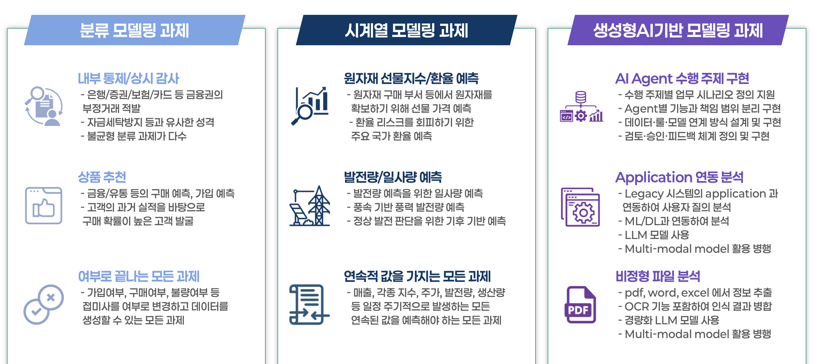
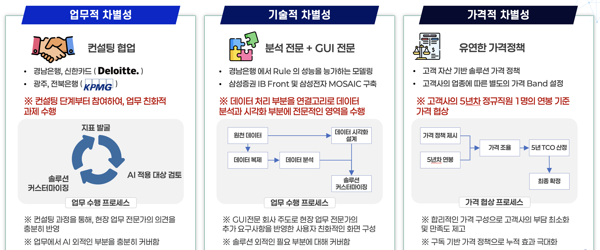

회사현황 및 보유 솔루션
회사 현황
사업 분야: 데이터 분석 컨설팅 및 구축
설립 년월: 2019년 05월
본사 주소: 경기도 안산시 상록구 한양대학로 55, 7층 709호
총 직원수: 11명 (2026.03.31 기준)
사업 범위
데이터 관련 다양한 과제 수행 이력을 기반으로 분류 모델링, 시계열
모델링, 생성형 AI 기반 모델링 전 영역에 대해
분석 과제 발굴에서
AI Agent 구축까지 데이터 관련 전체 영역 지원

과제 수행 차별성
AI 관련 솔루션을 보유하고 있으며, 다양한 파트너사들과의 협업을 통해 안정적인 과제 수행

AI 솔루션
Apollon Aegis (아폴론 아이기스) - AI Agentic Solution
Agentic AI 기반의 지능형 컴플라이언스 플랫폼으로, 금융 및 기업 환경에서 요구되는 고도화된 규제 대응과 리스크 관리를 체계적으로 지원합니다. AML(자금세탁방지), FDS(이상금융거래탐지), 상시 감시, 책무 관리 등 핵심 컴플라이언스 영역에 특화된 기능을 제공하며, 데이터 기반 자동화 분석과 의사결정 지원을 통해 업무 효율성과 정확도를 동시에 향상시킵니다. 내부 및 외부 데이터를 통합하여 이상 징후 탐지, 규정 영향도 분석, 리스크 예측 및 대응 전략 수립까지 전 과정을 자동화하며, AI Agent 간 협업을 통해 지속적인 학습과 개선이 가능한 구조를 갖춘 차세대 컴플라이언스 플랫폼입니다.
Whiz Apollon (위즈 아폴론) - ML Ops Platform
데이터 기반 AI 서비스를 안정적으로 운영하기 위한 통합 ML Ops 플랫폼으로, 데이터 수집부터 모델 개발, 배포, 운영에 이르는 전 주기를 체계적으로 관리합니다. 데이터 소스 관리, 파이프라인 관리, 모델 관리, 시스템 관리 기능을 중심으로 다양한 환경에서의 확장성과 운영 효율성을 동시에 확보하며, 표준화된 워크플로우를 통해 개발과 운영 간의 간극을 최소화합니다. 또한 사전 구축된 End-to-End 프로세스를 기반으로 AutoML 기능을 제공하여 데이터 전처리, 피처 엔지니어링, 모델 선택 및 튜닝, 성능 평가까지 전 과정을 자동화합니다. 이를 통해 사용자는 복잡한 설정 없이도 최적의 모델을 신속하게 도출할 수 있으며, 지속적인 모니터링과 재학습을 통해 모델 성능을 안정적으로 유지하고 고도화할 수 있습니다.
Quant Athena (퀀트 아테나) - Optimizaion Engine
금융 거래의 효율성과 수익성을 극대화하기 위해 설계된 고급 최적화 기반 분석 솔루션으로, 다양한 제약 조건과 시장 환경을 반영한 정교한 의사결정을 지원합니다. 포트폴리오 구성, 자산 배분, 거래 시점 및 주문 전략 최적화 등 금융 전반의 복합적인 문제를 수리적 모델링과 알고리즘 기반으로 해결하며, 대규모 데이터와 실시간 시장 정보를 활용한 정밀한 분석을 제공합니다. 선형 및 비선형 최적화, 확률 기반 시뮬레이션, 휴리스틱 기법을 통합 적용하여 다양한 유형의 최적화 문제에 유연하게 대응하며, 사용자 정의 목적 함수와 제약 조건을 기반으로 맞춤형 전략 도출이 가능합니다. 이를 통해 금융기관과 투자자는 리스크를 최소화하면서 기대 수익을 극대화할 수 있는 정량적 의사결정 환경을 확보할 수 있습니다.